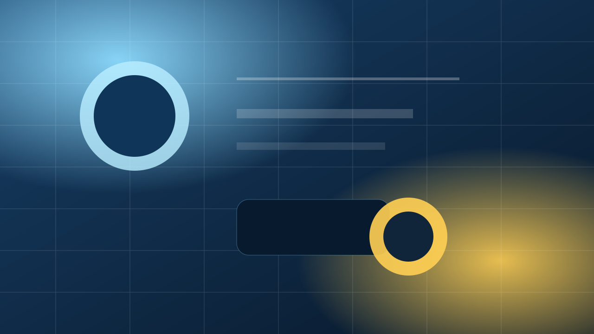
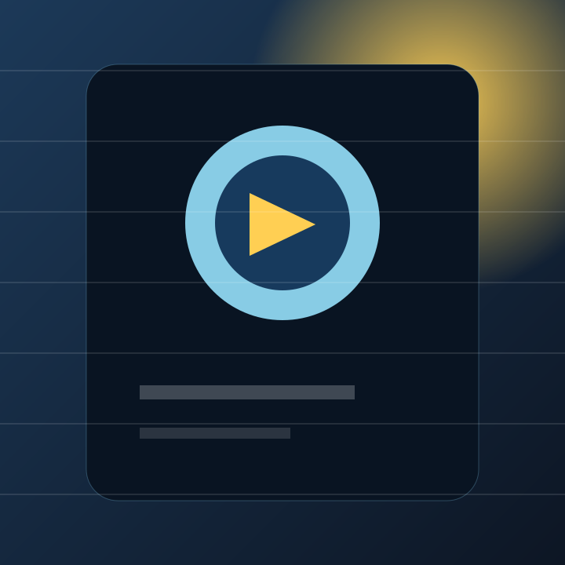
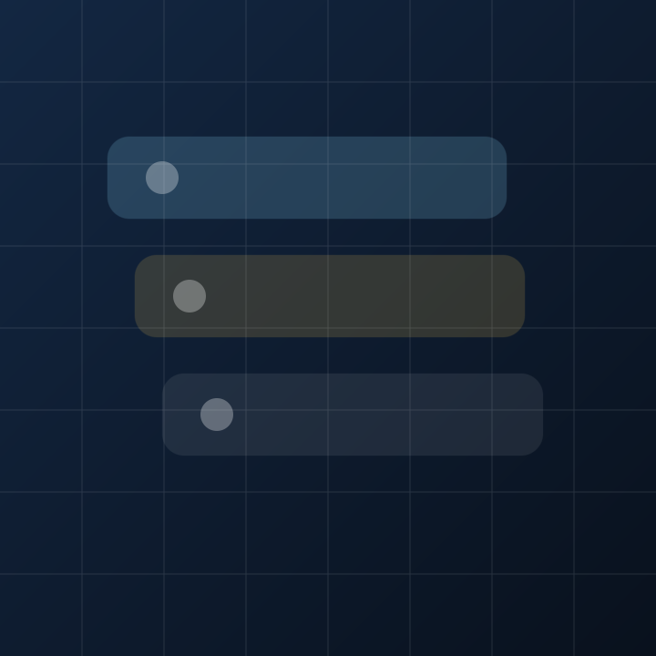
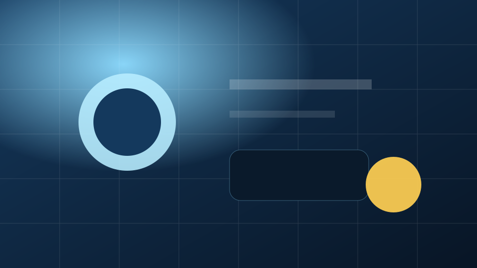
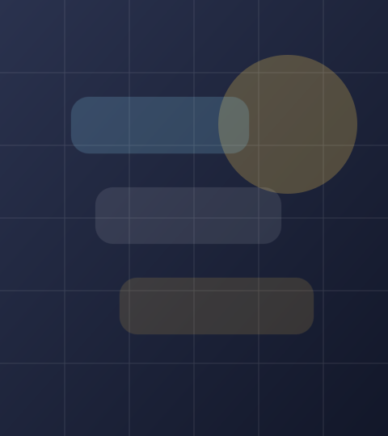

Live Hub
SOOP 방송국 메인처럼 라이브, 팬심, 게시판 흐름을 한 번에
실제 방송국 메인에서 보이는 구조를 팬사이트 안으로 옮겼습니다. 라이브 진입, 팬 랭킹, VOD와 게시판, 유저 Catch와 유저클립까지 활동 동선을 허브형으로 묶었습니다.
방송국
gyeonjahee
SOOP Mood
Live Hub
실제 방송국 메인에서 보이는 구조를 팬사이트 안으로 옮겼습니다. 라이브 진입, 팬 랭킹, VOD와 게시판, 유저 Catch와 유저클립까지 활동 동선을 허브형으로 묶었습니다.
Fan Rank
최근 방송 흐름과 대표 장면을 정리해서 따라가기 좋은 기본 축입니다.
3월 7일, 3월 6일 같은 일정형 공지와 팬 소통 게시판이 방송국의 중심 역할을 합니다.
짧은 반응과 순간 장면을 팬 시선으로 빠르게 소비하는 클립형 구간입니다.
고래상사, 버추얼, VRChat 같은 키워드가 반복적으로 쌓이는 대표 반응 아카이브입니다.
Community Mood
A Different World
견다방은 공지 확인만 하는 곳이 아니라 잡담, 팬아트, 굿즈 아이디어까지 이어지는 커뮤니티입니다. 이 페이지도 그 결을 따라, 단순 소개보다 팬이 오래 머물고 싶은 분위기를 먼저 보여주는 방향으로 잡았습니다.
YouTube Mood
Channel View
유튜브 채널 메인처럼 첫 줄에서 대표 영상 무드를 보여주고, 아래에는 썸네일형 카드와 재생목록성 카드가 이어지도록 구성했습니다. 방송국 허브가 라이브 중심이라면 여기는 편집 영상과 다시 소비되는 장면 중심입니다.
팬페이지 안에서도 유튜브 메인처럼 “무엇을 먼저 볼지”가 바로 읽히는 구조를 목표로 잡았습니다.



Main Video
처음 들어온 사람이 분위기를 바로 읽을 수 있도록 큰 썸네일과 짧은 설명을 우선 배치했습니다.
Short Clip
웃긴 반응, 순간 리액션, 밈화되기 쉬운 장면을 반복 시청하는 감각을 반영했습니다.
Playlist Mood
버추얼, VRChat, 편집 영상처럼 팬이 원하는 결대로 골라보는 플레이리스트 감각입니다.
채널 메인에서 바로 이어지는 기본 동선입니다.
Shorts 짧은 영상 흐름 보기짧게 소비되는 장면 중심으로 빠르게 훑는 구간입니다.
Playlists 재생목록 구조 보기정주행하거나 주제별로 고르기 좋은 유튜브형 정리 화면입니다.
Watch Point
팬사이트 안에서도 채널 첫 진입처럼 가장 넓은 인상의 카드가 먼저 오도록 구성했습니다.
Replay Point
방송 전체보다 짧은 장면을 다시 찾는 흐름을 별도 카드 톤으로 살렸습니다.
Archive Point
플레이리스트형 카드는 앞으로 실제 영상 섹션을 더 붙이기 좋은 자리이기도 합니다.
Anniversary
Important Days
생일, 첫 방송일, 팬카페 개설일처럼 팬페이지에서 반복해서 보게 되는 날짜를 모아두었습니다. 카드마다 다음 기념일까지 남은 일수와 해당 주년 흐름을 같이 보이게 구성했습니다.
2012.05.11
팬페이지 기준으로 가장 상징성이 큰 날짜라서 메인 카드로 올렸습니다. 지금의 분위기와 팬층이 시작된 출발점으로 읽히는 기념일입니다.
1993.04.28
2020.01.30
Profile
Overview
견자희는 2012년부터 활동해온 스트리머로, 부드러운 진행감과 안정적인 반응으로 오래 사랑받아 왔습니다. 팬들이 기억하는 핵심은 단순한 방송 목록보다도 목소리, 분위기, 그리고 커뮤니티의 결입니다.
Identity
Mood
팬페이지 전체를 하늘색 기반으로 두고, 황금색을 리본과 링크 포인트에 배치했습니다. 밝고 선명한 첫인상은 유지하면서도, 방송국형 정보 카드가 어색하지 않게 붙도록 조정한 조합입니다.
Activity Axis
VOD
방송 전체 흐름을 따라가고 싶은 팬에게 가장 기본이 되는 축입니다.
Clip
고래상사, 버추얼, VRChat 같은 키워드가 짧은 영상으로 반복 소비됩니다.
Catch
팬들이 “이 장면 봤냐” 하고 공유하기 좋은 반응형 콘텐츠 구간입니다.
Board
공지는 물론이고 팬덤 결을 유지하는 핵심은 텍스트 커뮤니티 쪽에 있습니다.
Official Routes
Highlights
Character
팬들이 가장 자주 이야기하는 건 특정 방송 하나보다도 전체적인 말투와 무드입니다. 그래서 이 페이지도 화려한 정보표보다, 첫인상과 체류감에 무게를 두고 구성했습니다.
Live
라이브, 다시보기, 게시판, 팬 콘텐츠가 한 흐름으로 이어지는 구조가 잘 어울립니다.
Fandom
견다방의 존재감이 커서, 팬덤 이미지를 설명할 때 커뮤니티 결을 빼기 어렵습니다.
Clips
유저 Catch와 유저클립이 방송국 메인에서도 강하게 보이는 만큼 팬 체감도 큽니다.
Timeline
오래 축적된 팬층과 방송 분위기의 출발점으로 기억되는 날짜입니다.
공식 팬카페가 커뮤니티의 중심축으로 자리 잡기 시작한 시점입니다.
VOD, 게시판, 유저 Catch, 유저클립이 팬페이지 안에 허브형 섹션으로 재해석되었습니다.
소개 페이지가 아니라 실제 활동 거점처럼 보이도록 비주얼과 정보 구조를 계속 확장하는 단계입니다.
Immersive Mood
Full Canvas
참고해준 공유 페이지처럼 위에는 단순한 크롬만 두고, 중심에는 크게 몰입해서 보는 한 장면을 배치했습니다. 팬사이트 안에서도 방송국 메인, 팬카페 무드, 대표 키워드가 한 화면에 읽히도록 재구성한 구간입니다.

Signature Mood Sky Blue Stage
Fan Scene Rose ArchiveNow Showing
고래상사 / 버추얼 / VRChat / 팬아트 대표 키워드와 장면을 큼직하게 묶은 팬 허브형 프리뷰Live Route
방송국 진입Fan Route
카페와 게시판Archive
VOD / Clip / CatchFandom Notes
견자희 팬페이지는 강한 속도감보다 편하게 오래 보고 싶은 정서가 더 중요합니다.
이번 구조는 견다방의 커뮤니티성 위에 SOOP 방송국의 허브형 동선을 얹는 방식입니다.
팬사이트의 분위기를 밝게 끌어올리되, 링크와 강조는 황금색으로 묶었습니다.
Direction
지금 버전은 견다방의 정서와 SOOP 방송국의 구조를 합친 팬 허브입니다. 다음 단계에서는 대표 이미지, 팬아트 썸네일, 실제 클립형 썸네일까지 붙이면 완성도가 더 올라갑니다.